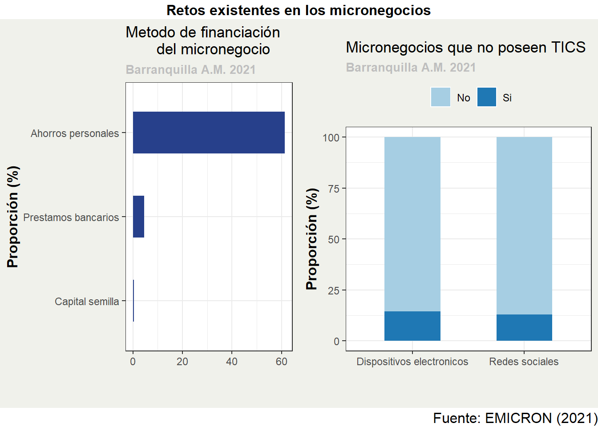

Tesis
1
Tesis de pregrado
2
Contenido
3
Introducción
4
Motivación
5
Objetivos
6
Pobreza y crecimiento en Barranquilla A.M.
7
Comparación con otras ciudades
8
Evolución del PIB - Barranquilla
9
evolucion principales ciudades
10
Caracterizacíon Socioeconomica
11
Indice de pobreza multidimensional
12
Componentes del IPM para Barranquilla
13
Personal Ocupado en micronegocios
14
Caracterizacion Micronegocios
15
Retos Identificados
16
Metodología
17
Ejemplo
18
Resultados
19
Brecha de la pobreza
20
Severidad de la pobreza
21
Conclusiones
22
Referencias
Published with bookdown
Descomposición y crecimiento económico en Barranquilla A.M.
14
Caracterizacion Micronegocios
